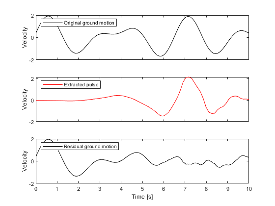

example PulseDecomp
Pulse decomposition of a velocity time history in OpenSeismoMatlab
Contents
Generate earthquake motion
For reproducibility
rng(0)
Generate earthquake velocity time history with a pulse
duration = 10; dt = 0.01; t = linspace(0, duration, duration /dt)'; num_sin_components = 3; xgt = zeros(length(t),1); for i = 1:num_sin_components s = rand * sin(2 * pi * 0.5*rand * t + rand); xgt = xgt + s; end
Setup parameters for PulseDecomp function
Wavelet family to be considered as the contained pulse
wname = 'db4';
Minimum pulse period for the continuous 1-D wavelet transform
TpMin = 0.25;
Minimum pulse period for the continuous 1-D wavelet transform
TpMax = 15;
Number of pulse period values between TpMin and TpMax
nScales = 50;
Calculate Pulse and residual motion
Apply PulseDecomp
[pulseTH,resTH,Tp,wavScale,wavCoef] = ...
PulseDecomp(dt,xgt,wname,TpMin,TpMax,nScales);
Plot the initial, pulse and residual time histories
Initialize figure
np = length(xgt); time = dt:dt:dt*np; fig = figure(); % Initial velocity time history subplot(3,1,1) plot(time, xgt, '-k') legend('Original ground motion','location','northwest') ylabel('Velocity'); set(gca, 'xticklabel', []) % Pulse velocity time history subplot(3,1,2) plot(time, pulseTH, '-r') legend('Extracted pulse','location','northwest') ylabel('Velocity'); set(gca, 'xticklabel', []) % Residual velocity time history subplot(3,1,3) plot(time, resTH , '-k') legend('Residual ground motion','location','northwest') hy = ylabel('Velocity'); hx = xlabel('Time [s]'); drawnow; pause(0.1)
Copyright
Copyright (c) 2018-2023 by George Papazafeiropoulos
- Major, Infrastructure Engineer, Hellenic Air Force
- Civil Engineer, M.Sc., Ph.D.
- Email: gpapazafeiropoulos@yahoo.gr